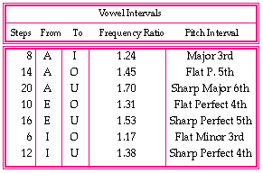

This table demonstrates the possibilities for the vowel interval steps for consonance, and shows their frequency ratios and pitch intervals (size). Some of the vowels were not included because their combinations would result in the same steps and frequency ratios as mentioned in the table.
Please note that some microtone pitch intervals in the analysis were prefixed with e.g. "Sharp" Major 3rd, and "Flat" Perfect 4th in order to define their pitch positions.
Example 6: Consonance vowel interval analysis.
